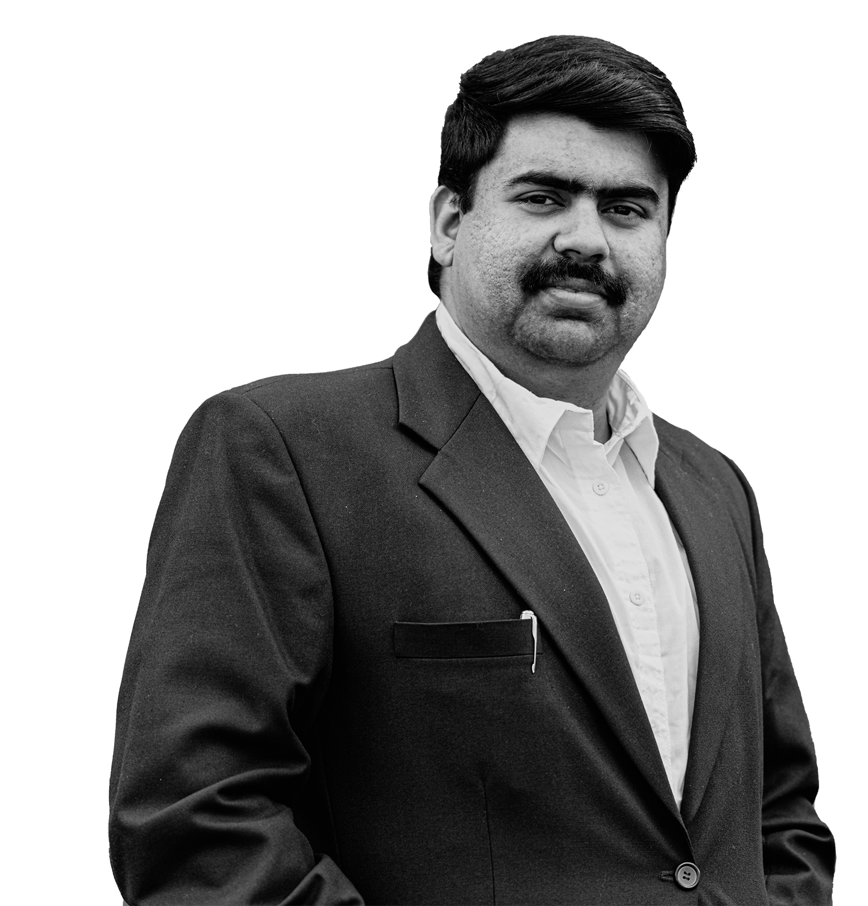

<div class="about-upamanyu-container">
    <div class="about-upamanyu w-container">
        <h2 class="about-upamanyu-header">About WildArk and Upamanyu Das</h2>

        
        <!-- full_width -->

        <div class="about-upamanyu-text">
            <h3 class="about-upamanyu-article-kicker"><span style="color:#696969;">“I aim to imprint the soul of the animals through my photographs.”</span></h3>

            <p>WildArk, is the second photographic ark of its kind. It is a multiyear effort to document every species living in zoos and wildlife sanctuaries around the world. Through these photographs I aim to capture the character of each animal, imprinting their souls on my sensor.</p>

            <p>Inspired from <a class="decoratedLink" href="https://www.nationalgeographic.org/find-explorers/joel-sartore" target="_blank">Joel Sartore</a>'s <a class="decoratedLink" href="https://www.nationalgeographic.org/projects/photo-ark/"  target="_blank">Photo Ark</a>, Wildlife filmmaker & designer <a class="decoratedLink" href="https://www.upamanyu.in/" target="_blank">Upamanyu Das</a> started the WildArk in his hometown of Kolkata, India on a <a class="decoratedLink" href="https://upamanyu.in/works/2015/zoo-portraits" target="_blank">rainy afternoon</a> 2017. Since then, he has visited more than 3 countries and photographed more than {{ counter }} species in his quest to create this photo archive of global biodiversity.<br>
            <br>
            </p>
        </div>
    </div>
</div>
